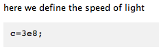
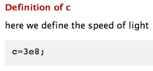

Mark up comments for publishing
Contents
You can mark up comments in your MATLAB files so that when you publish the code, it appears polished, rather than as a text file of code. To include comments (i.e., not MATLAB code) in your m-file, use the % symbol:
c = 3e8; % unit: m/s
Also, a line starting with '% ' (a % followed by a space) represents descriptive text:
% here we define the speed of light
c=3e8;
which, after published, should look like
Section titles
A line starting with '%% ' (two % followed by a space) specifies a section title:
%% Definition of c % here we define the speed of light c=3e8;
which becomes
after published.
To include a document title, just add a section title in the first line of your script, and it will look like this:
Adding cell breaks
A line starting with '%% ' (two % followed by a spaces) but has no content indicates a cell break, which is useful when you want to separate your MATLAB code into different section. Here's an example without cell break:
x = linspace(1,2,5) x.*x sin(x)
x =
1.0000 1.2500 1.5000 1.7500 2.0000
ans =
1.0000 1.5625 2.2500 3.0625 4.0000
ans =
0.8415 0.9490 0.9975 0.9840 0.9093
All the output mixed together, makes your published file hard to read. If you use cell breaks:
x = linspace(1,2,5) %% x.*x %% sin(x) %%
it will look much better:
x = linspace(1,2,5)
x =
1.0000 1.2500 1.5000 1.7500 2.0000
x.*x
ans =
1.0000 1.5625 2.2500 3.0625 4.0000
sin(x)
ans =
0.8415 0.9490 0.9975 0.9840 0.9093
Use ; to shorten the output
In the example above, you don't need to print out the value of x itself, only the calculation results x^2 and sin(x). You can use ; to tell MATLAB "don't print the output of this line":
x = linspace(1,2,5);
x.*x
ans =
1.0000 1.5625 2.2500 3.0625 4.0000
sin(x)
ans =
0.8415 0.9490 0.9975 0.9840 0.9093
By properly use ; in your script m-file, you can make the published file brief and clear!